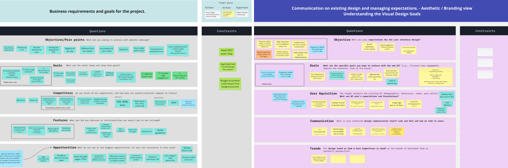
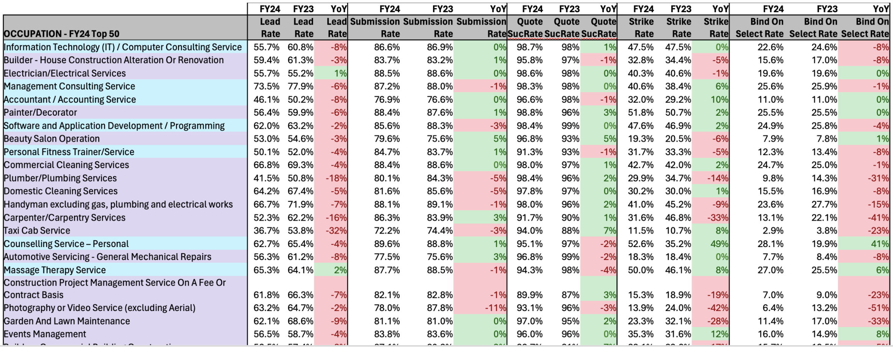
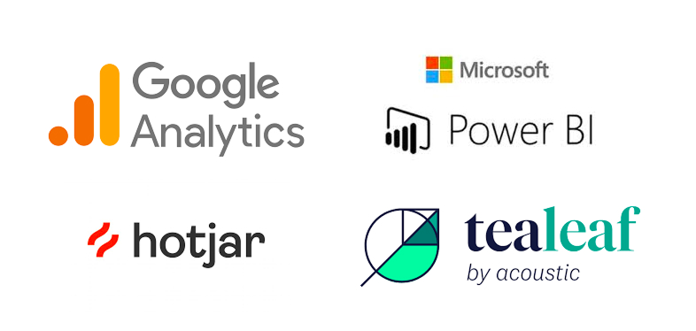
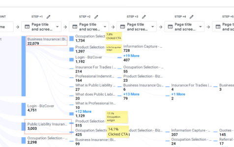
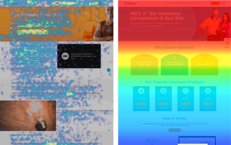
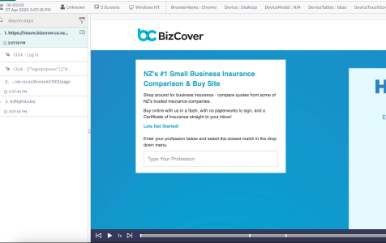
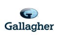
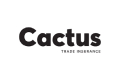
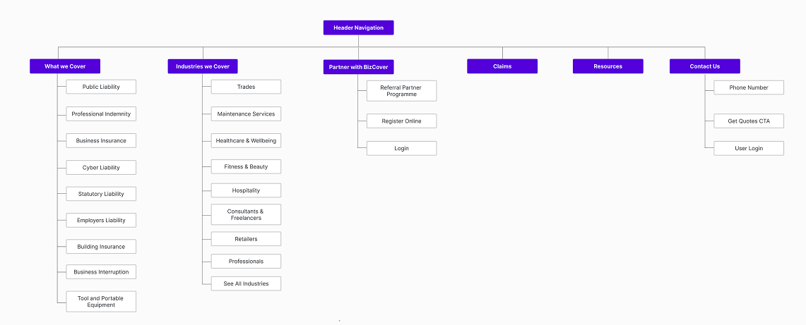
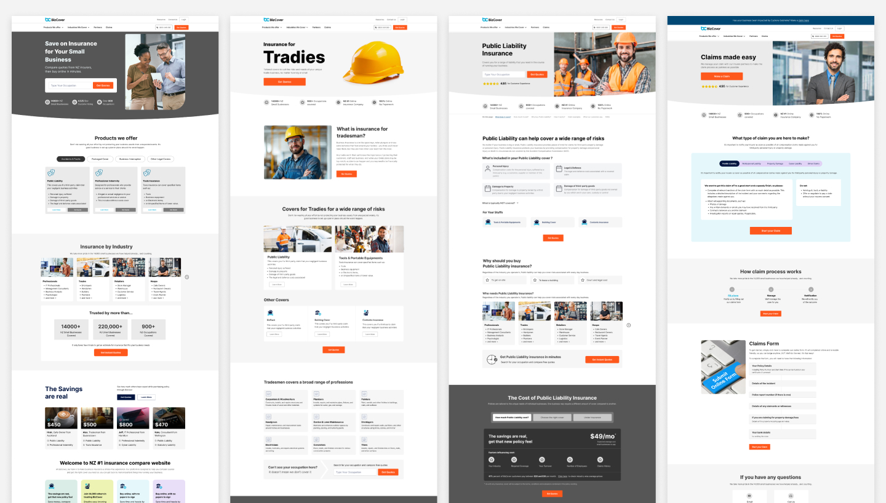

{kind=link}
Contact
Let's work together
For new opportunities and collaborations. Feel free to reach out or just want to connect.
Complete UX overhaul of a legacy banking website, resulting in 85% increase in CTR for desktop and 157% increase in CTR for mobile.
The primary goal of website revamp was to transform the existing website into a high-performing platform that effectively engages users, provides a seamless and intuitive experience, and significantly increases the number of users who proceed to compare insurance quotes. This involved a comprehensive website revamp, incorporating user-centered design principles and a data-driven approach, to address key challenges such as low user engagement, high bounce rates, and a suboptimal mobile experience. The ultimate objective was to drive business growth by improving lead generation and reducing the cost per acquisition.
My Role: I was part of the project as a Lead UX designer and was responsible for the overall user experience strategy and execution.
Collaboration: Business Stakeholder, Project Manager, Sales and Marketing Team, Business Analyst, Sr. UI Designer and Dev team.
Tools: Miro, Figma, Jira, Trello, MS Teams

This project plan outlines the key phases, deliverables, and timelines required to successfully execute the UX strategy. It ensures alignment across stakeholders, provides clarity on roles and responsibilities, and helps track progress from discovery through to delivery.

Click image to enlarge
The discovery workshop was a focused get-together with everyone involved to figure out exactly what we're doing with this project, why it matters to the business, and how we'd know if we are in right direction.

Outcome of the discovery workshop that was conducted with stakeholders:

We kicked off the research phase by diving deep into understanding our users - their pain points, motivations, and what opportunities we could tap into. We used mix of methods like user interviews, NPS surveys, competitive analysis, and reviewing analytics data to get a full picture. This approach helped uncover real insights that set a strong foundation for making smart, user-centered design decisions. We gained insights through data from Google Analytics, Tealeaf, Hotjar and PowerBi (Annual Data) and double-jacking customer calls sessions with sales agents to understand user struggles.
Purpose of research was to identify:
We conducted few user and agent talking sessions to really get into user shoes — what they’re struggling with, what they care about, and what they actually need. These conversations gave a ton of honest insights and uncovered patterns that helped in focusing our UX/UI efforts right from the start.
" Site is buggy, needs some work. There's a lot to select and understand so your explanation of lot of these items can be improved. "
Along with user and agent interactions, We dug into analytics, heatmaps, and session recordings to understand how people were actually interacting with the site. This helped in identifying where users were dropping off, getting stuck, or just behaving differently than we expected. Combining real data with user feedback gave us a much clearer picture of what was working, what wasn’t, and where the biggest opportunities for improvement were.




To get more closer look to NZ insurance market and do some benchmarking we did competitive analysis research across various insurance companies. The analysis was focused on the design, content, and user experience of competitiors website, highlighting strengths and weaknesses. The companies analyzed include Gallagher, State, Tower Insurance, AMI Insurance, and Cactus Insurance.
| Insurer | Strengths | Weakness |
|---|---|---|
|
 |
|
|
|
|
|
|
|
|
|
|
|
 |
|
|
|
|
|
|
Based on our research findings, we started on the ideation to create IA, wireframes and interactive prototypes. We iteratively refined these designs through multiple feedback sessions with stakeholders and users.
I created a journey map to visualize the current point of clicks for user to engage through their purchase journey.

The development of the website is guided by the following principles to ensure user value and effectiveness:
We started with organizing navigation menu to make more intuitive and easy for user to access their industry and desired insurance products. We grouped products and industry for easy access providing more personalization.

Going through all insights of the user, user goals, the architecture, and user behaviour, I started working on high-fidelity wireframes making data-informed decisions on how website design would look like.
We started with mobile-first design as during our research phase we identified significant number of user are mobile user and number is growing

Below are the few screens out of many screens that were created during the ideation phase.

Some of the artefactcs are organized in Miro board to understand process.
After the finalization of all wireframes, I shiped all wireframes to the Senior UI designer. Where in collaboration, we locked down the core visual elements.
We monitored website performance for next one month after the launch. The redesigned experience led to measurable improvements in user satisfaction and business metrics. Key performance indicators showed substantial growth following the implementation.
For new opportunities and collaborations. Feel free to reach out or just want to connect.